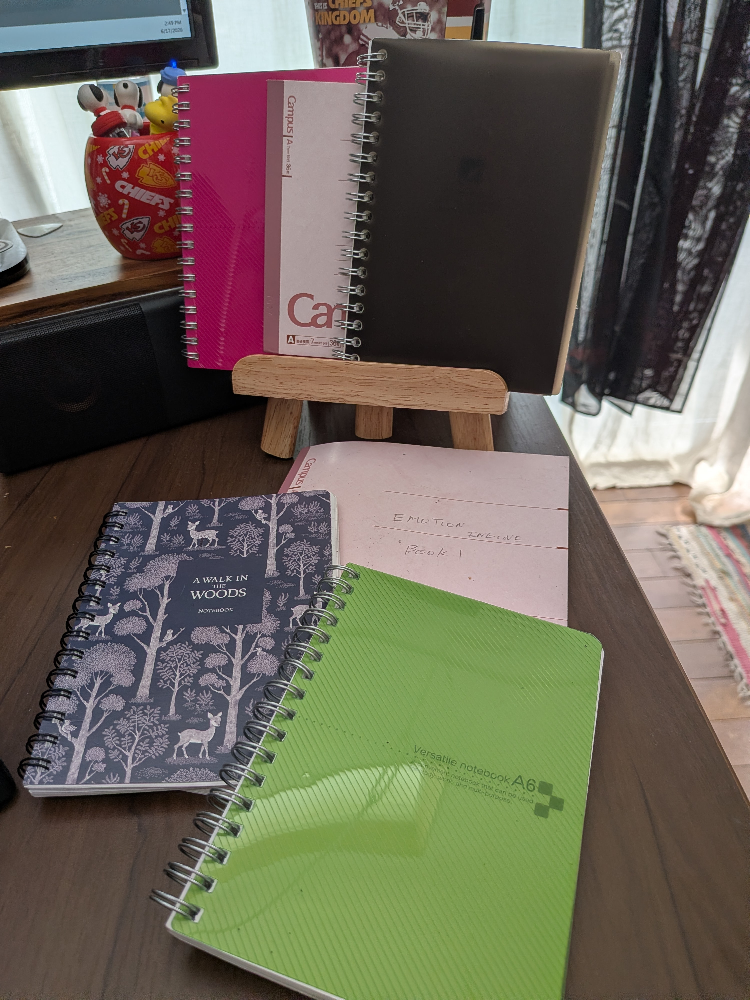
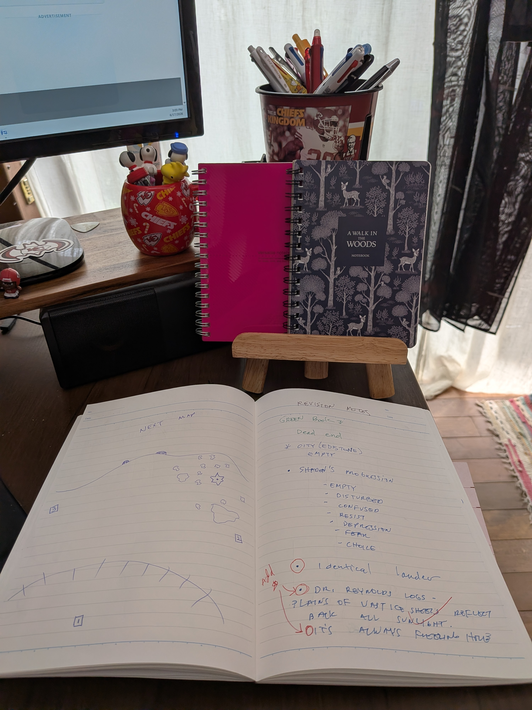
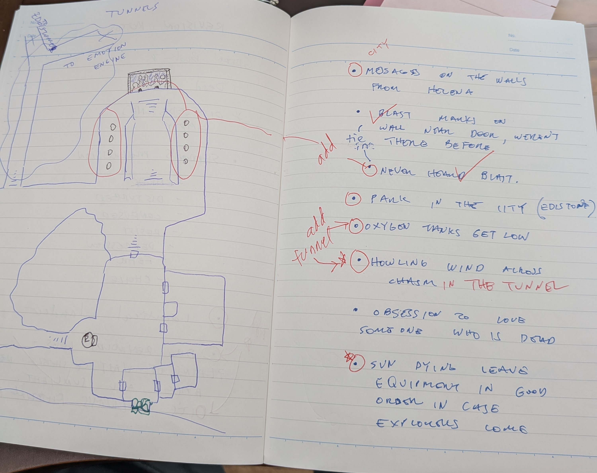
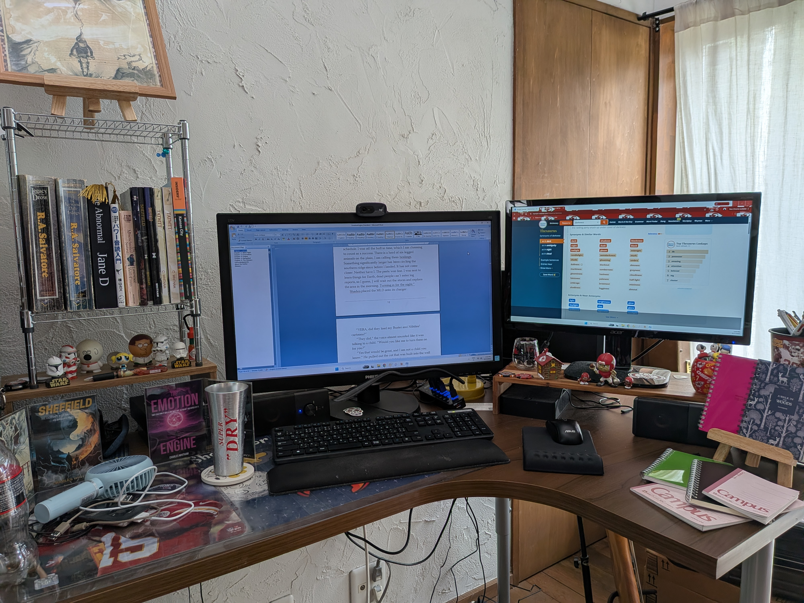

I have been writing The Emotion Engine across seven notebooks. Last week I opened the first one and realized I had left a surprising amount of it there.
This isn't a crisis. It's actually a pretty normal part of how I work — or at least, it's become normal. When I'm in the flow of a chapter, really moving, I'm not stopping to cross-reference notes. I'm following the scene. And the notes, sitting in whatever notebook I was using at the time, just wait. Patiently. Not entirely helpfully.
So right now, with six chapters of the manuscript drafted and chapter seven on the horizon, I've hit pause. I'm going back through the earlier chapters with the notebooks open beside me, finding the things that didn't make it in, and working them into the manuscript. Some of it is small. Some of it turns out to matter quite a bit.

The Notebooks
I didn't plan to fill seven notebooks. I started with one, ran out of space, grabbed another. At some point the notebooks stopped being purely for planning and started being the place where I work things out in real time — character psychology, world logic, scene structure, questions I can't answer yet. There are diagrams in there. There are passages I wrote by hand before typing them up. There are notes written in red pen circling things I added later and marking what still needs to go in.
The system is organized, in the way that a creative brain is organized — which is to say, it makes complete sense to me and would probably look like chaos to anyone else.

Going back through them now, I keep finding things and thinking: of course. Of course that was in there. Of course I meant to include it. I was just moving too fast to stop and look.
What I Found
A couple of examples, without going too far into spoiler territory.
In an early chapter, Shaden steps off the Sunbridge and immediately gets to work securing the anchors and planting the beacon. Which makes sense — that's what you do when you land on an alien planet. But reading it back against the notebooks, I realized I had skipped something that should have been obvious: he would take a soil sample first. That's not a dramatic moment. It's a procedural one. But skipping it makes Shaden feel less like the careful, methodical scientist he is, and that matters. The character is built on that precision. The manuscript needed it.
The other example is bigger. The planet in The Emotion Engine is alive — not in a metaphorical sense, but literally, biologically alive in ways Shaden is only beginning to understand. One of the implications of that is that there is DNA in the ground. Shaden finds it early on and misreads it: he thinks he's found evidence of something that used to be alive, something long dead, rather than recognizing that the planet itself is the organism. That confusion is important. It sets up how he's going to interpret everything else he encounters. And it was sitting in a notebook, waiting, while the manuscript moved on without it.

Why This Is Actually Good News
I want to be clear that this isn't a setback. Going back through the early chapters isn't a sign that the draft is broken — it's a sign that the world got richer as I wrote it, and the earlier chapters need to catch up. That's a good problem to have.
It also means I'm doing something I didn't do as deliberately with my first two books: treating the revision pass as part of the process, not as damage control. I'm not just fixing what's wrong. I'm improving the prose as I go, tightening sentences, adjusting the rhythm of scenes that felt slightly off. The manuscript is getting better in a way that feels intentional rather than frantic.
The target is still November 2026. I'm on track. But I'd rather take the time now to get the foundation right than arrive at chapter twelve and realize the ground underneath isn't solid.

What's Next
Once this revision pass is done — and I'm moving through it quickly, it's not a ground-up rewrite — I'll be back in chapter seven. Which, based on where chapter six ended, is going to be a challenging one to write. In a good way. The kind of challenging where you're nervous to sit down and start because you know it matters.
I'll have more to say about that when I get there. For now, I'm enjoying this slightly unexpected detour. There's something satisfying about reading back through the early pages of a novel and finding that the things you forgot to include are exactly the things the book needs.
The notebooks knew. I just wasn't listening closely enough the first time.
—Charles